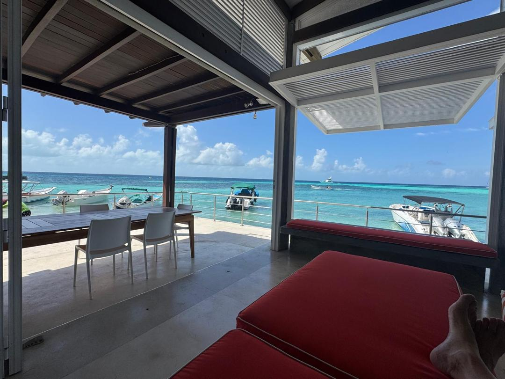
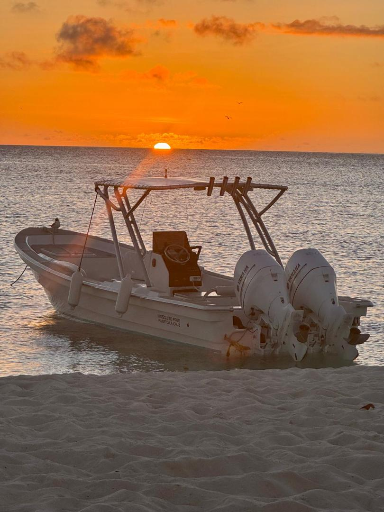
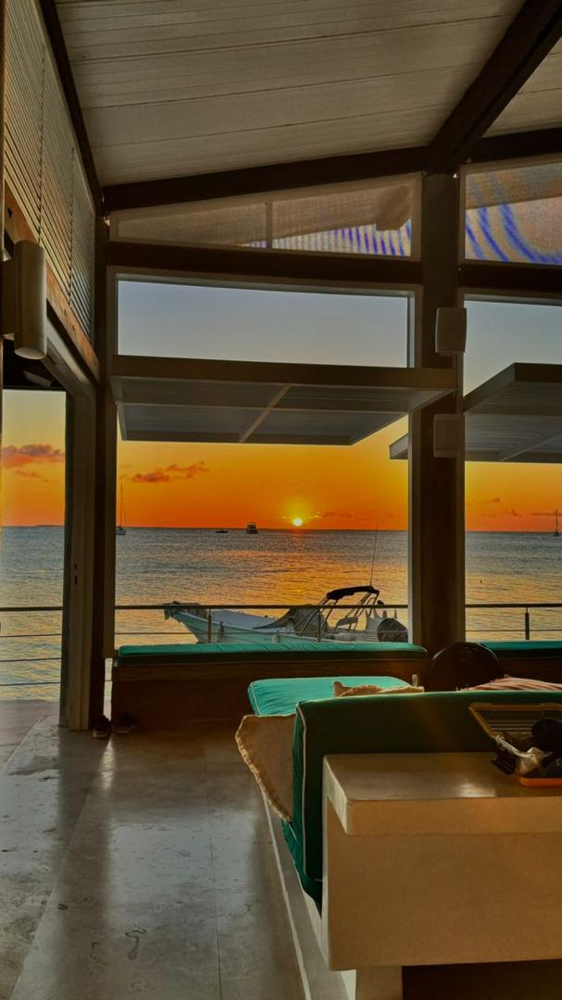
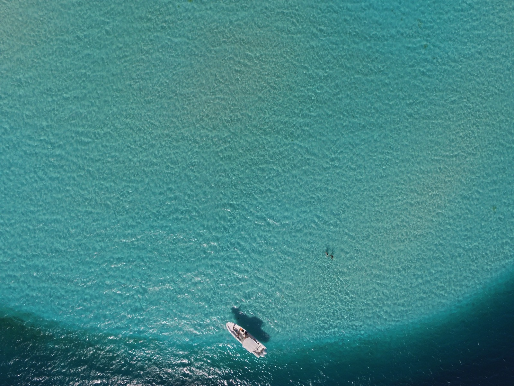

Casa Verde
Descubrir
En Casa Verde, el lujo no se declara — se vive. Una casa privada diseñada para quienes buscan lo extraordinario: silencio, mar turquesa, y una atención sin igual.
Casa Verde es una casa de lujo en Gran Roque, el corazón del Archipiélago Los Roques. Sus tres habitaciones premium, terraza rooftop con vistas panorámicas y cocina gourmet crean un espacio donde cada detalle ha sido concebido para el descanso absoluto.

Cada estadía en Casa Verde es gestionada por un equipo dedicado: chef, asistentes y tripulación. No hay detalles que atender — solo disfrutar.




Casa Verde se encuentra en una de las posiciones más codiciadas de Gran Roque: con frente directo al mar, una rareza en el archipiélago.